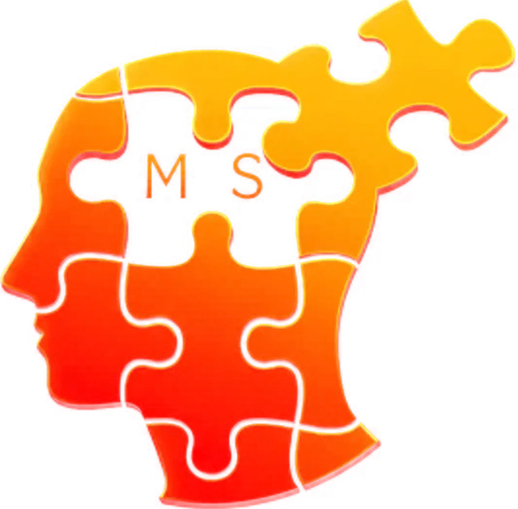

Criação de conteúdo
Roteiro, copy, foto, vídeo e edição. Conteúdo pensado para parar o dedo, educar e vender — não só para preencher calendário.
Falar sobre isso
Mind Sculptor Diagnóstico grátisAgência de marketing digital · Brasília/DF
Estratégia, conteúdo, design, tecnologia e tráfego no mesmo lugar — trabalhando juntos para transformar atenção em faturamento.
role: a poeira vira a marca
O diagnóstico
É falta de direção. Na maioria das empresas o marketing acontece em pedaços soltos — e pedaço solto não constrói marca nem gera venda.
Conteúdo bonito sem estratégia vira entretenimento. Ele precisa levar alguém de "nunca ouvi falar" até "quero comprar".
Sem rastreamento e leitura de dados, tráfego pago vira aposta. E aposta cara: cada real errado sai do seu lucro.
Se a identidade visual, o site e o feed não transmitem confiança, o preço sempre vai parecer alto para o cliente.
Indicação é ótima, mas não é previsível. Sem uma máquina de aquisição, o mês bom vira exceção.
Designer de um lado, gestor de tráfego do outro, site parado. Cada um puxa para um canto e ninguém responde pelo resultado.
Enquanto sua equipe leva um dia para produzir, quem domina IA entrega em uma hora — e testa dez vezes mais.
A gente não vende post. A gente constrói percepção — e percepção vira venda.
O que fazemos
Cada peça encaixa na outra: o conteúdo alimenta a rede, a rede alimenta o tráfego, o tráfego cai numa página que converte. Arraste para o lado para ver todas — ou clique em qualquer uma para falar sobre ela.
Roteiro, copy, foto, vídeo e edição. Conteúdo pensado para parar o dedo, educar e vender — não só para preencher calendário.
Falar sobre issoPlanejamento mensal, publicação, legendas, hashtags, stories e resposta a comentários. Presença constante com identidade e propósito.
Falar sobre issoIdentidade visual, papelaria, embalagem, apresentações e artes de campanha. O nível visual que faz seu preço fazer sentido.
Falar sobre issoPáginas rápidas, responsivas e construídas para converter. Copy persuasiva, estrutura inteligente e foco total no botão que importa.
Falar sobre issoDo app de fidelidade ao sistema interno que resolve sua operação. Tecnologia sob medida, integrada ao seu marketing.
Falar sobre issoCampanhas estruturadas em Google, Meta, YouTube e TikTok. Público certo, criativo testado e verba acompanhada de perto, todo dia.
Falar sobre issoSEO, Google Meu Negócio e conteúdo que trabalha por você depois de publicado. O ativo que reduz sua dependência de anúncio.
Falar sobre issoNão entregamos só o resultado: treinamos o seu time para produzir com inteligência artificial no dia a dia — conteúdo, atendimento, criativos e processos.
Falar sobre issoComo trabalhamos
A ordem importa. Pular etapa é o motivo número um de verba desperdiçada em marketing.
Entendemos seu negócio, sua margem, seu cliente e o que já foi tentado. Antes de propor, a gente escuta e mede.
Definimos posicionamento, oferta, canais e metas. Você recebe um plano com prioridade clara — não uma lista de desejos.
Conteúdo, design, páginas e campanhas saindo no ritmo combinado, com um time só respondendo por tudo.
Lemos os dados, cortamos o que não performa e ampliamos o que dá lucro. Todo mês melhor que o anterior.
Diferencial Mind Sculptor
A maioria das agências usa inteligência artificial escondida e cobra pelo mistério. Nós fazemos o contrário: usamos IA para entregar mais rápido e ensinamos sua equipe a fazer o mesmo dentro da sua empresa.
rodando_no_seu_time
Onde todo mundo posta, a gente pergunta por quê. Onde todo mundo mede curtida, a gente mede caixa. É só isso — e é tudo.
A diferença na prática
Um time só, com estratégia, criação e mídia conversando na mesma sala. Uma pessoa responde pelo resultado — e ela tem nome.
Vários fornecedores, nenhum responsável pelo resultado. Quando o número cai, cada um aponta para o outro.
Calendário que segue um objetivo comercial. Cada peça existe porque empurra uma venda específica, não porque a data chegou.
Post publicado porque “precisa postar hoje”. O feed enche, o caixa não.
Verba acompanhada de perto, com corte no que não anda e escala no que dá lucro. Relatório de lead, custo por conversão e retorno.
Anúncio no impulso, sem leitura de dados. Relatório de curtida e alcance — números que não pagam conta.
Página construída para o clique virar contato, e sua equipe treinada para tocar a IA sozinha depois que a gente sai.
Site bonito que ninguém acha e ninguém preenche. E você refém de quem faz.
Dúvidas frequentes
Depende do escopo. Trabalhamos por pacote mensal e por projeto fechado. No diagnóstico gratuito a gente olha seu cenário e devolve uma proposta com escopo e valor definidos — sem surpresa depois.
Tráfego pago costuma dar sinal nas primeiras semanas. Marca, conteúdo e orgânico são construção: o ponto de virada normalmente aparece entre o terceiro e o sexto mês.
Não. Preferimos que você fique porque está dando resultado, não porque está preso a uma multa.
Sim. A base é Brasília/DF e atendemos todo o Brasil de forma remota, com a mesma rotina de reunião e relatório.
Dos dois jeitos: assumindo as frentes que faltam ou treinando o seu time para produzir com IA e método. Muita gente começa pelo treinamento e depois amplia.
Não. A verba de mídia vai direto para as plataformas, na sua conta, com seu cartão. Você enxerga cada centavo — nosso valor é a gestão.
Um responsável direto, com o time por trás. Você não fala com robô nem com um atendente diferente a cada semana.
Diagnóstico gratuito
Preencha os campos ao lado. A conversa segue direto no WhatsApp com quem entende do assunto — sem robô, sem funil de vendedor.
Brasília/DF · atendemos todo o Brasil